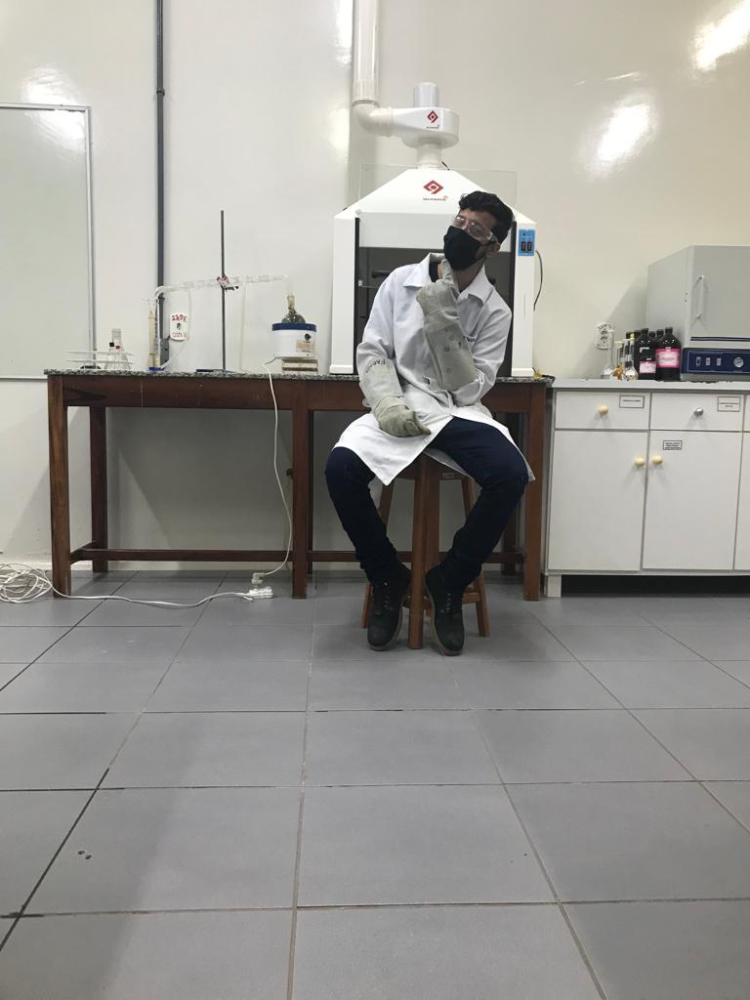

Welcome to John's Page
I strive not to see an idea win or lose, but to understand reality as frankly and accurately as possible, even if it is not beautiful, convenient, or pleasant.
Current Work
I am currently engaged in scientific research at the Faema University Center, focusing on Quality Control and Biological Activity of Medicinal Plants.
